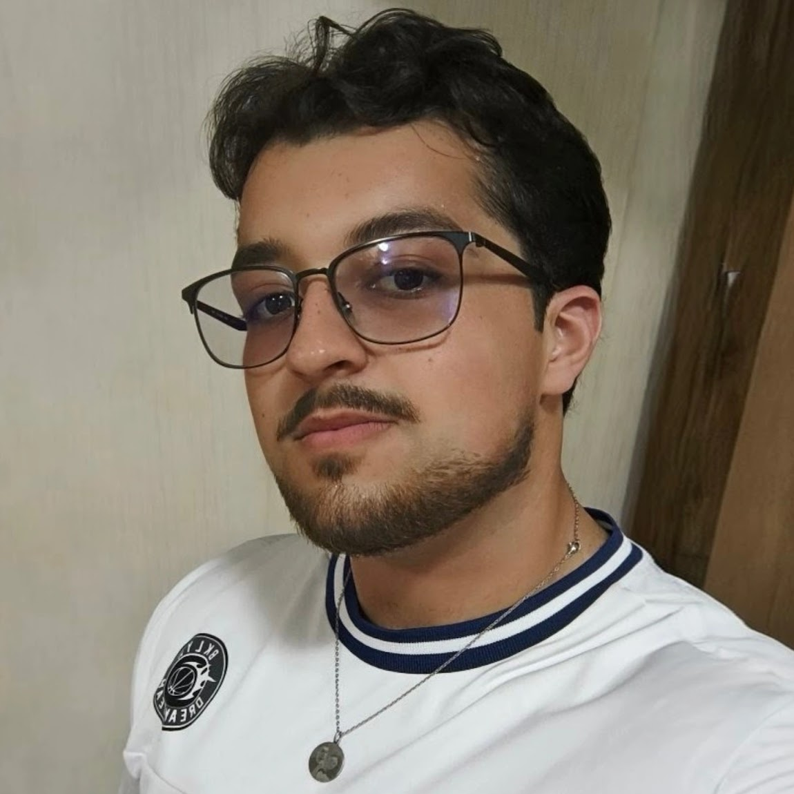

Estudante na UVA · Rio de Janeiro. Construo soluções que cruzam o mundo físico com o digital — de microcontroladores embarcados a aplicações web robustas.

Sou Lucas Fernandes, graduando em Engenharia de Computação na Universidade Veiga de Almeida (UVA), com previsão de formatura em dezembro de 2027.
Meu perfil combina sólida base em software (Java, Python, C, JavaScript, MySQL) com experiência prática em hardware e sistemas embarcados (ESP32, Arduino, MQTT, amplificadores operacionais, IoT).
Não fico só na teoria — tenho mentalidade maker: gosto de transformar ideias em projetos reais, bem documentados e prontos para o mercado. Estou em busca do meu primeiro estágio na área de TI / Desenvolvimento.
Arquitetura e programação de microcontroladores para soluções industriais, residenciais e assistivas.
Aplicações robustas focadas em POO, lógica de negócio e processamento de dados estruturados.
Desenvolvimento de interfaces modernas e funcionais, com foco em usabilidade e design minimalista.
Circuitos com amplificadores operacionais, fontes de alimentação simétricas, filtros e sistemas de áudio de baixo custo.
Modelagem relacional e consultas SQL aplicadas a sistemas reais de gerenciamento e controle de dados.
Versionamento, documentação técnica e prototipagem com foco em boas práticas de engenharia de software.
Sistema assistivo baseado no microcontrolador ESP32 com comunicação via protocolo MQTT. Projetado para automação inteligente e acessibilidade, o sistema permite controle de dispositivos físicos sem contato, com alto impacto social. Demonstra capacidade de projetar soluções IoT completas — do hardware à lógica de comunicação.
Aplicação Java desenvolvida para disciplina de programação. Consolida POO com controle de fluxo de produtos, processamento de vendas e regras de negócio complexas — simulando um ambiente comercial real.
Software em Python criado para Sistemas Especializados. Otimiza o fluxo de atendimento em ambientes de saúde com classificação inteligente de pacientes, regras clínicas e processamento de dados estruturados.
Mixer de áudio analógico construído do zero com amplificadores NE5532, fonte simétrica ±12V e conectores P10. Projeto de baixo custo com foco em desempenho e viabilidade, integrando eletrônica analógica e engenharia de áudio.
Web app que detecta a tonalidade vocal em tempo real usando os algoritmos YIN e HPS, com perfilamento de chave musical via Krumhansl-Schmuckler. Combina processamento de sinal digital com desenvolvimento web moderno.
Início da graduação na Universidade Veiga de Almeida, Rio de Janeiro. Primeiros contatos com lógica de programação, eletrônica básica e arquitetura de computadores.
Desenvolvimento de projetos com ESP32 e Arduino, primeiro contato com MQTT e IoT. Início dos estudos em dispositivos eletrônicos com base no Boylestad & Nashelsky (análise de BJTs, amplificadores de dois estágios).
Sistema de Gerenciamento em Java, Triagem Médica em Python, Mesa de Som com NE5532, VocalKey. Construção do portfólio técnico e certificações. Primeiro currículo ATS para estágio.
Em busca do primeiro estágio em TI, desenvolvimento de software ou sistemas embarcados. Continuando projetos práticos e aprofundando stack técnica.
Conclusão do curso de Engenharia de Computação pela Universidade Veiga de Almeida.
Vamos conversar?